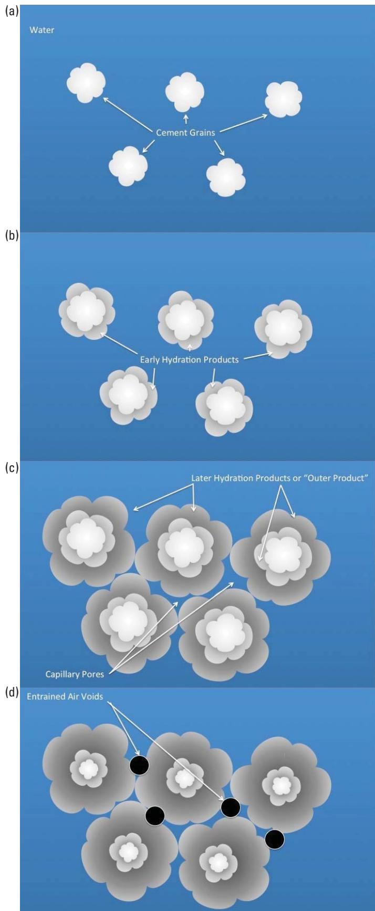
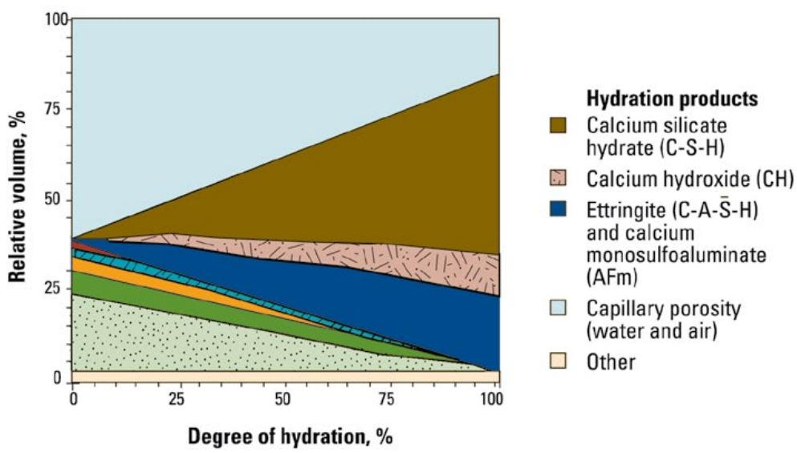
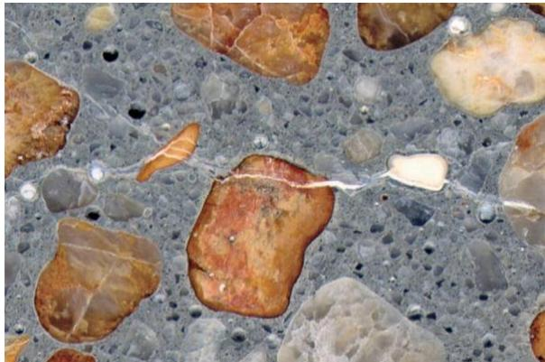
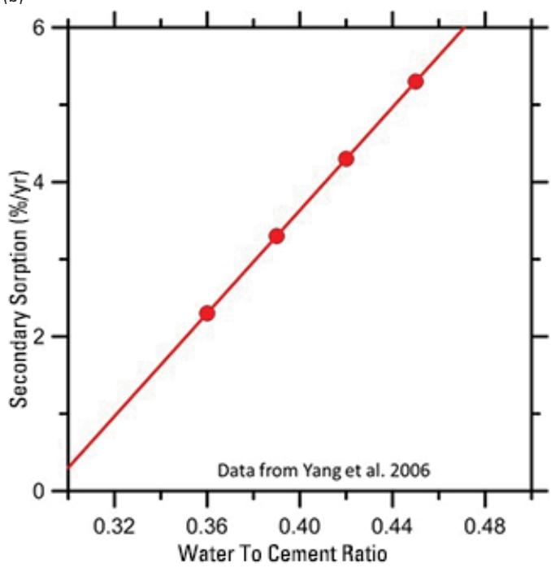

Concrete Mixture Design
Concrete mixture design is the systematic process of selecting and proportioning cement, supplementary cementitious materials, aggregates, water, and chemical admixtures to achieve specified performance criteria such as strength, workability, durability, and cost efficiency. The designer defines required properties based on intended structure, exposure conditions, and service life, then determines ingredient quantities that satisfy these requirements while respecting practical constraints like material availability and economic considerations [1]. The water-to-cementitious materials ratio serves as the primary controlling factor for strength and permeability, where lower ratios reduce capillary porosity to enhance durability but require chemical admixtures to maintain adequate workability without adding excess water [1] [2]. Supplementary cementitious materials partially replace Portland cement to modify paste chemistry, mitigate long-term durability issues such as alkali-silica reaction and sulfate attack, and reduce the environmental impact of the mix [2] [3]. Chemical admixtures are incorporated to modify fresh-state properties like setting time and air content, with air-entraining agents creating stable microscopic voids that provide essential protection against freeze-thaw damage by accommodating ice expansion [1] [3].
Sources (4)
Key findings
- Incorporating supplementary cementitious materials further reduced permeability and enhanced resistance to physical and chemical attacks [1] [2] [3].
- Lowering the water-to-cementitious ratio reduced paste permeability, increased strength, and slowed water transport to manage freeze-thaw damage [1] [3].
- Increasing entrained air lowered the initial saturation level and extended the time to reach critical saturation in freeze-thaw environments [1] [3].
- Higher variability in air content sharply reduced predicted service life by accelerating the rate at which concrete reached critical saturation [3].
- Using recycled concrete aggregate required quantifying its higher porosity and softness to compensate for these properties in the mixture proportioning [1].
- Type IL Portland-limestone cement increased water demand, reduced workability, lowered bleeding, and altered set times compared to standard cements [2].
- Mixing time significantly affected component distribution, segregation risk, and the full activation of chemical admixtures in the fresh concrete [2].
- Excessive dosages or incompatibilities with certain chemical admixtures led to premature stiffening, delayed setting, or strength loss [1].
Fundamental Mixture Design Principles and Proportioning
Concrete mixture design is the systematic selection and proportioning of cement, supplementary cementitious materials, aggregates, water, and chemical admixtures to achieve specified performance criteria such as strength, workability, and durability [1]. The water-to-cementitious materials ratio serves as the primary controlling factor for hardened concrete properties, governing both compressive strength and permeability by determining capillary porosity [3]. Aggregates form the structural skeleton of the mix, with their physical characteristics directly influencing water demand, workability, and overall density [2]. Chemical admixtures are employed to modify fresh-state properties like setting time and consistency without altering the fundamental composition of the mixture [1].
The following figure illustrates the microstructural evolution of cement grains as they disperse and form hydration products within the mixture.

Cement grain dispersion and development of hydration products and capillary pores [3]The figure illustrates the sequential microstructural changes in cement paste, starting with water surrounding individual cement grains. As hydration progresses, early and later hydration products form around the unreacted cores, eventually filling space to create a solid matrix containing capillary pores.
Research problem — Concrete mixture design requires balancing mutually exclusive fresh- and hardened-state properties, such as workability versus low permeability and shrinkage, to achieve an economical and durable pavement [1]. The increasing use of supplementary cementitious materials and evolving chemical admixtures complicates traditional recipe-based proportioning, necessitating a more rigorous approach to reconcile contradictory performance requirements [1]. Variability in material sources and composition forces frequent redesigns to maintain regulatory compliance and pavement integrity, creating challenges for schedule stability and consistent durability [2].
State of the art — The current state of the art in concrete mixture design has shifted from recipe-based proportioning to a performance-oriented methodology that accommodates supplementary cementitious materials and evolving chemical admixture blends [1]. Designers target specific durability, strength, and sustainability goals by proportioning mixes with locally available constituents while keeping costs reasonable [1]. A central lever is the water-to-cementitious material ratio, which when lowered consistently raises strength, reduces capillary porosity, and limits permeability [1].
The figure below illustrates how capillary porosity varies with mix proportions at a standard water-to-cementitious material ratio of 0.50.

Estimates of the relative volumes of cement compounds and products of hydration with increasing hydration. [1]The figure illustrates how the relative volume of capillary porosity decreases as the degree of hydration increases, while the volume of calcium silicate hydrate (C-S-H) increases correspondingly.
Findings from the reports
- Concrete mix design achieved a uniformly strong, durable, and wear-resistant surface mortar by employing a consistent, dense mixture and siliceous sand as the fine aggregate [4].
- Optimal mixes for dowel bar retrofits increased yield and limited shrinkage by incorporating Type III cement with an accelerator and using aggregates no larger than 0.375 inches [4].
- Successful mixture design secured locally available, specification-compliant raw materials before bidding to maintain a stable supply chain and avoid costly redesigns [2].
- Modern designs accounted for Type IL Portland-limestone cement by adjusting proportions through trial batching because its higher limestone content increased water demand, reduced workability, and altered set times [2].
- Specifications mandated a fresh concrete mix design whenever the source or brand of any component was altered to ensure compliance with FAA/DOD standards [2].
- Mixing time established through trial batching ensured full activation of admixtures and proper component distribution, particularly for mixes with finer sand or Type IL cement [2].
- Material sourcing leveraged locally available or recycled waste streams to cut transportation distance, lower cost, and reduce emissions while verifying life-cycle benefits [1].
- Mixes remained lean in binder by limiting total cementitious content to roughly 540 lb per cubic yard and replacing up to thirty percent with high-quality supplementary cementitious materials [1].
- Durability in freeze-thaw environments achieved by entraining an appropriate air-void spacing factor while recognizing that each percent of entrained air reduced compressive strength [1].
- Water quality met strict limits, with recycled water acceptable only if total dissolved solids remained below 2,000 ppm and seven-day strength reached at least ninety percent of a potable-water control [1].
- Chemical admixtures improved workability or reduced water demand but required trial batching to prevent premature stiffening, delayed setting, or strength loss from incompatibilities [1].
- The water-to-cementitious-materials ratio served as the dominant factor governing strength and permeability, set as low as practicable while still meeting workability requirements [1].
- Thorough mixing according to ASTM C94, proper batch-size control, and daily monitoring of aggregate moisture maintained the designed water-to-cementitious-materials ratio and air content [1].
- Every calculated proportion validated with laboratory trial batches and field trials when any ingredient changed by more than five percent to confirm workability, setting time, air entrainment, and early-age strength [1].
Novelty & rigor — The research introduces a constraint-driven design philosophy that lowers total cementitious content and explicitly permits the use of reclaimed wash-water containing suspended fines, transforming a waste stream into a functional mixing component [1]. It distinguishes itself by treating mixing time as a controllable parameter determined through on-site mixer uniformity testing rather than assuming a constant value, thereby addressing the altered kinetics of modern material blends [2]. Reproducibility is ensured by mandating semi-adiabatic calorimetry to monitor early hydration kinetics and requiring specific QC checks such as void content analysis to validate mixture uniformity before field application [2].
Reported values
| Parameter | Value | Context | Source |
|---|---|---|---|
| 7-day strength ratio | 90 percent% | strength of cylinders/mortar cubes made with questionable water vs potable/distilled water control | [1] |
| compressive strength loss per air content increase | 5 percent% | loss of compressive strength for every 1 percent entrained air | [1] |
| ingredient change threshold for trial batches | 5 percent% | change in ingredient source or amount required to trigger trial batches | [1] |
| SCM replacement percentage | 30 percent% | replacement of portland cement with high-quality SCMs | [1] |
| spacing factor limit | 0.008 in. | air-void spacing factor adequate to protect concrete from freeze-thaw damage | [1] |
| total cementitious materials content | 540 lb/yd3 | lowering total cementitious materials content limit | [1] |
| total dissolved solids limit | 2,000 parts per million | mixing water acceptable for making concrete | [1] |
| w/cm ratio range | 0.40 to 0.45 | good w/cm ratio for most applications | [1] |
| alkali loading limit | 3.0 lb/yd3 (1.8 kg/m3) | concrete mixture | [2] |
| limestone content | 5% to 15% | Type IL cement | [2] |
| maximum aggregate size | 0.375 in. | sand and aggregate in concrete mix for dowel bar retrofits | [4] |
Across the reviewed reports, successful concrete mixture design is fundamentally anchored in strict control of the water-to-cementitious-materials ratio and rigorous validation through trial batching to account for material variability. While all sources emphasize the necessity of verifying local material availability and conducting pre-production trials, they diverge on specific proportioning strategies: one report advocates for lean mixes with high volumes of supplementary cementitious materials to enhance sustainability, whereas another prioritizes dense, siliceous sand-based mortars for surface durability. The collective evidence indicates that modern designs must explicitly accommodate the physical properties of specific cement types and supplementary materials, such as increased water demand from limestone cements or the need to compensate for recycled aggregate porosity, through adjusted mixing times and admixture dosages. [1] [2] [4]
The following figure illustrates a conservative timeline for mixture and materials approval in a DOD airport concrete paving project.
 Conservative timeline for mixture and materials approval for DOD airport concrete paving project. [2]
Conservative timeline for mixture and materials approval for DOD airport concrete paving project. [2]
The figure displays a Gantt chart illustrating the sequential testing phases required to approve aggregate materials and concrete mixtures, including freeze-thaw resistance, deleterious content analysis, alkali-silica reaction potential, and strength testing over a period of several months. This timeline demonstrates that the approval process is time-consuming and constitutes a major piece of the critical path at startup for construction projects. The figure highlights that rigorous validation through testing is necessary to ensure material quality, as underestimating these requirements can lead to expensive errors during the bidding stage.
Implications — Designers must prioritize locally available materials to ensure supply chain continuity, as switching suppliers or brands triggers mandatory redesigns that risk schedule delays and cost overruns [2]. Mixtures should be proportioned using low water-to-cement ratios and supplementary cementitious materials to enhance durability and reduce environmental impact, while strictly controlling alkali content to mitigate expansion risks [1] [2]. Construction practices must account for the specific fresh-state properties of blended cements by extending mixing times and verifying homogeneity through trial batches to prevent defects caused by increased water demand [2].
The following figure illustrates the alkali-silica reaction (ASR) distress that strict control of alkali content aims to prevent.

(Left) ASR distress on a concrete pavement surface (source: Dave Rath). (Right) ASR distress as observed by microscope in polished concrete specimen. [2]The image displays a microscopic view of a polished concrete specimen containing coarse aggregates embedded in a cementitious matrix. A distinct white crack traverses the center of the field, cutting through both the aggregate particles and the surrounding paste.
Limitations — Concrete mixture design is not a flexible fallback but depends on the assured local supply of specified materials, where any shortage or change in supplier forces a new mix and creates schedule risk [2]. Variability in material properties limits confidence because mill certificates provide only monthly averages, meaning each cement shipment may differ slightly and requires fresh design verification per specifications [2]. Current supplementary cementitious material tables are based on outdated data, so materials may no longer be locally available and must be substituted after trial batching [2]. Adjustments to component quantities are permissible only within the approved water-cementitious ratio, as any change altering this ratio demands an accepted laboratory proportioning study [2]. There is no universal formula for a sustainable mix, so each design must be tailored to project-specific constraints and locally available aggregates rather than relying on generic recipes [1]. Recycled concrete aggregate should not replace fine aggregate due to its high water demand and higher porosity, which forces tighter quality control and proportion adjustments [1]. Chemical admixtures are treated as enhancements rather than fixes, requiring trial batches under actual job conditions to verify compatibility especially when new material sources or high-range water reducers are considered [1].
The following figure illustrates the moisture conditions of aggregate.
 Moisture conditions of aggregate (ACPA 2015). [2]
Moisture conditions of aggregate (ACPA 2015). [2]
The figure illustrates four distinct moisture states for an aggregate particle: Oven-Dry, Air-Dry, Saturated Surface Dry (SSD), and Wet. Visually, the transition from Oven-Dry to SSD shows water progressively filling internal pores until they are completely saturated while the surface remains dry. Concrete mixture design typically assumes aggregates are in saturated surface dry (SSD) condition, as this state ensures that aggregate moisture content does not alter the water available for paste production. If production aggregates are drier than SSD, less water will be available to produce the paste needed to coat and lubricate the aggregate particles.
Evidence: 4 reports (3 primary)
Material Composition & Interactions
Research problem — Joint deterioration in newly placed concrete pavements is driven by the susceptibility of hardened cement paste to physical and chemical attacks from freeze-thaw cycles and deicing chemicals, particularly when mixture design fails to adequately control air entrainment and water-to-cement ratio [3]. Research seeks to determine how variability in air content and the degree of saturation interact with mix properties to accelerate material failure, thereby identifying optimal low water-to-cement ratios that reduce permeability and enhance freeze-thaw durability [3].
The figure below illustrates how the degree of saturation influences stiffness degradation resulting from freeze-thaw damage.
 Influence of the degree of saturation on relative stiffness degradation due to freeze-thaw damage. [3]
Influence of the degree of saturation on relative stiffness degradation due to freeze-thaw damage. [3]
The figure plots Relative Stiffness against Degree of Saturation (%) for two concrete mixtures with different air contents, showing that stiffness remains high until a critical threshold is exceeded. Once the degree of saturation exceeds this critical point, damage initiates in the material regardless of the quantity and quality of the air system. This demonstrates how mixture design parameters like air entrainment interact with saturation levels to determine freeze-thaw durability.
State of the art — Current practice for designing freeze-thaw resistant concrete relies on sorption-based models that predict the time required to reach a critical degree of saturation, typically identified at 85 percent [3]. Designers achieve durability by maintaining low water-to-cement ratios and incorporating air entrainment, with standards such as ACI 201 prescribing maximum w/c limits of 0.45 for severe exposure conditions [3]. Recent advancements incorporate Monte Carlo simulations to account for variability in air content, which significantly impacts predicted service life and highlights the importance of controlling mix consistency [3].
The following figure illustrates the conceptual framework of the sorption-based freeze-thaw model discussed above.
 A conceptual illustration of the sorption-based freezethaw model showing degree of saturation versus time. [3]
A conceptual illustration of the sorption-based freezethaw model showing degree of saturation versus time. [3]
The figure plots the Degree of Saturation against the square root of Time, illustrating a two-stage absorption process where an initial rapid uptake (blue line) transitions into slower secondary sorptivity (red line). A yellow region labeled “Critically Saturated” indicates the threshold above which freeze-thaw damage occurs, with a dashed line marking this critical limit. The graph demonstrates how varying water-to-cement ratios and air volumes affect the rate of saturation, showing that lower w/c mixes saturate more slowly than higher w/c mixes.
Findings from the reports
- Increased entrained air content lowered the initial degree of saturation and delayed reaching the critical saturation level required for freeze-thaw damage [3].
- Higher water-to-cement (w/c) ratios accelerated water transport and hastened the approach to critical saturation, thereby increasing susceptibility to freeze-thaw deterioration [3].
- Greater variability in entrained air content significantly reduced predicted service life, with higher coefficients of variation leading to substantially shorter durability estimates [3].
- Lower w/c ratios reduced paste permeability and slowed water transport, which enhanced resistance to freeze-thaw damage and improved overall strength [3].
- Incorporating supplementary cementitious materials (SCMs) further reduced permeability and enhanced resistance to physical and chemical attacks [3].
- Lignin-, sugar-, and triethanolamine-based water reducers destabilized marginally balanced cement systems by accelerating aluminate hydration while retarding silicate hydration, causing early stiffening followed by delayed final set and reduced strength gain [1].
- Cement source markedly influenced the behavior of water-reducing admixtures, with specific blends showing slower temperature rises and lower peak heat indicative of retarded setting and early-strength development [1].
Novelty & rigor — The research introduces a sorption-based model that predicts the time required for concrete to reach critical saturation by explicitly integrating mixture design variables and their statistical variability [3]. This approach is distinct because it couples the physical saturation model with Monte Carlo simulations to quantify how fluctuations in water-cement ratio and air content impact service life estimates [3]. The methodology relies on standard mix preparation protocols and continuous water exposure conditions, allowing for reproducible probabilistic analysis of durability under freeze-thaw stress [3].
The following figure illustrates how variations in the water-cement ratio and air volume affect the time required for concrete to reach critical saturation.
 The influence of w/c ratio and air volume on the time required for 20 percent of the concrete to reach critical saturation (assuming 5 percent COV in w/c ratio and 15 percent COV in air content) [3]
The influence of w/c ratio and air volume on the time required for 20 percent of the concrete to reach critical saturation (assuming 5 percent COV in w/c ratio and 15 percent COV in air content) [3]
The figure plots the probabilistic relationship between the probability of failure and the time required for concrete to reach critical saturation under varying mixture conditions.
Reported values
| Parameter | Value | Context | Source |
|---|---|---|---|
| time of failure | 7.9 years | high variability in air content | [3] |
| time to failure | 13.8 years | 15 percent COV in air content | [3] |
| time to failure | 17.2 years | 5 percent COV in air content | [3] |
| time to failure | 7.9 years | 25 percent COV in air content | [3] |
Across the reviewed reports, concrete durability is fundamentally governed by the interplay between water transport mechanisms and chemical hydration kinetics, where lower water-to-cement ratios and controlled air entrainment delay critical saturation while specific admixtures can significantly alter setting times depending on cement source. While reducing the water-to-cement ratio and incorporating supplementary cementitious materials enhance resistance to physical attacks by lowering permeability, the variability in air content and interactions between chemical admixtures and specific cement types introduce critical risks that can sharply reduce predicted service life or destabilize hydration balance. [1] [3]
The following figure illustrates how these air voids cluster around aggregate particles.
 A typical example of air voids clustered around an aggregate particle [1]
A typical example of air voids clustered around an aggregate particle [1]
The image displays a cross-section of hardened concrete containing coarse aggregates and a cementitious matrix. A distinct accumulation of air voids is visible surrounding the large aggregate particle on the left, illustrating the phenomenon known as clustering. This specific incompatibility in the air-void system results in reduced strength and increased permeability within the concrete mixture design.
Implications — Designers must prioritize low water-to-cement ratios and robust air-void control to limit paste permeability and prevent freeze-thaw damage [3]. Specifications should incorporate supplementary cementitious materials and target a water-to-cement ratio at or below 0.45 while ensuring sufficient entrained air [3]. Tight control of mean air content and its variability is essential because even modest fluctuations can significantly shorten the predicted service life, particularly at joints where water accumulates [3].
The following figure illustrates how water-to-cement ratios and air content influence the secondary matrix properties and sorption behavior of concrete mixtures.

Influence of the water-to-cement ratio on secondary sorption. [3]This trend illustrates a key principle of concrete mixture design where higher water-to-cement ratios increase permeability and transport properties, which directly impacts the durability and service life of the structure.
Limitations — Predictive models relying on sorption data are limited by insufficient information regarding how adjustments to mixture components, particularly supplementary cementitious materials, influence saturation behavior [3]. The underlying material property database remains incomplete, and measurement uncertainty complicates the control of air-content variability within mixtures [3].
Evidence: 2 reports (2 primary)
Related concepts
In this hierarchy
- Parent: Cementitious Materials
- Sibling: Cement Chemistry
- Sibling: Cement Production
- Sibling: Concrete Durability
- Sibling: Sustainable SCMs
Related by shared evidence
- Aggregate Management — shares 4 reports
- Cement Chemistry — shares 4 reports
- Cementitious Materials — shares 4 reports
- Concrete Production — shares 4 reports
- Concrete Testing — shares 4 reports
- Cracking Mitigation — shares 4 reports
- Joint Maintenance — shares 4 reports
- Joint Sealing — shares 4 reports
Similar topics
- Mixture Design
- Mixture Design
- Cement Chemistry
- Design Considerations
- Mixture Management
- Concrete Durability
- Concrete Durability
- Sustainable SCMs
Source coverage
| Source | Fundamental Mixture Design Principles and Proportioning | Material Composition & Interactions |
|---|---|---|
| [1] | ✓ | ✓ |
| [2] | ✓ | |
| [3] | ✓ | ✓ |
| [4] | ✓ |
References
- Integrated Materials and Construction Practices for Concrete Pavement: A STATE-OF-THE-PRACTICE MANUAL (2019)
- Best Practices Manual: Quality Control and Quality Acceptance of Concrete Airport Pavement (2025)
- Guide to the Prevention and Restoration of Early Joint Deterioration inConcrete Pavements (2016)
- Concrete Pavement Preservation Guide (Third Edition) (2022)
Feedback on this page